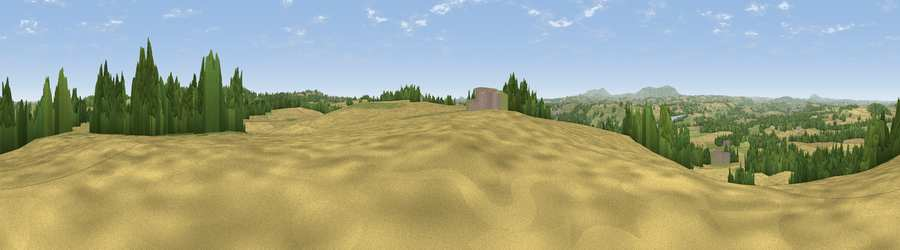

Viewpoint near Quatt
#15742 in England · top 32% of its area beats it · near QuattWhere it is
The exact computed spot (SO 76825 87525). Click the marker for map links.
The view, rendered

A 360° render of this exact spot computed from the terrain model, tree cover and land cover — summer colours, afternoon light, calibrated against photographs of famous viewpoints. Real trees, hedges and buildings will differ in detail.
The panorama
Grey silhouette: terrain skyline in each direction (720 bearings, Earth curvature and refraction included). Dashed green: skyline with trees (+15 m) and buildings (+8 m) as obstacles. Blue strip: how far the ground is visible on each bearing.
Where the view opens
Wedge length = distance to the farthest visible ground on that bearing (vegetation-aware). Rings at 10, 25 and 50 km.
What fills the view
50% cropland · 28% grassland · 20% woodland · 1% built-up
Angular shares of the visible panorama (visual magnitude), not map area. Landscape diversity 0.48 (0–1 Shannon).
Key numbers
More beautiful places nearby
The staircase of upgrades: each row has a higher view potential than everything closer. Driving times are estimates from straight-line distance, calibrated against real road routing — check an actual route before setting out.
| Place | Direction | Drive | Score |
|---|---|---|---|
| Viewpoint near Quatt | E · 2 km | ~5 min | 61.9 |
| Viewpoint near Quatt | E · 2 km | ~5 min | 62.1 |
| Viewpoint near Enville | SE · 4 km | ~10 min | 66.9 |
| Viewpoint near Enville | ESE · 5 km | ~11 min | 73.1 |
| Knowle Hill | SW · 9 km | ~18 min | 75.5 |
| Viewpoint near Burwarton | W · 17 km | ~30 min | 83.4 |
| Titterstone Clee | WSW · 20 km | ~34 min | 83.8 |
| Viewpoint near Little Wenlock | NW · 25 km | ~40 min | 86.6 |
52.48515, -2.34270 · source: screening · position refined by local search. Computed location — check access rights before visiting.